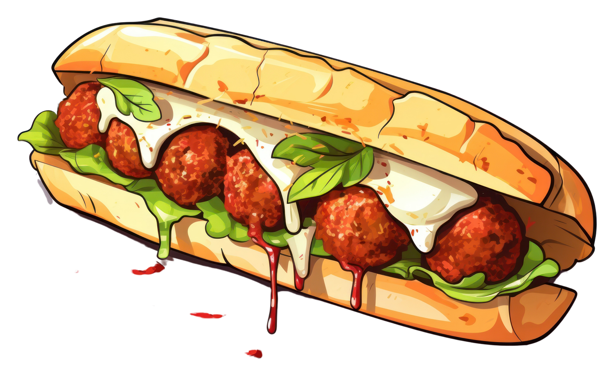
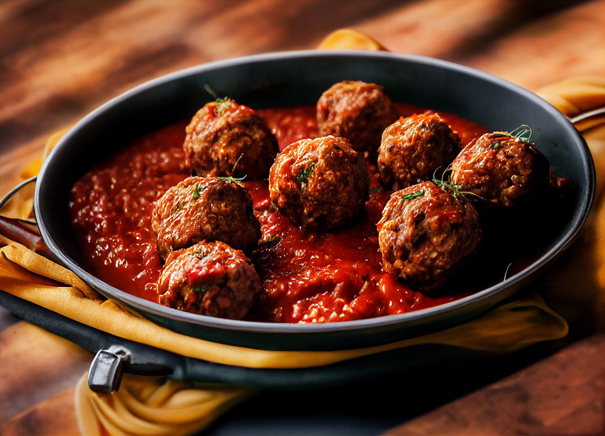
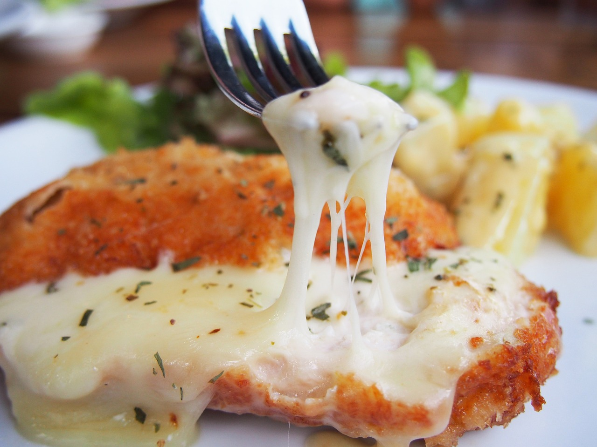

Join the Dark Side: The Meatball Side.

The Warmest Hug on a Winter Day.
I remember coming home after a particularly hard day at school when I was a little girl. My auntie had picked me up from elementary school during the winter days. The cold had sept into my bones, and I was feeling a chill. I wrapped myself in a blanket and turned on the television to my favorite show Roly Poly Olie on Treehouse. My aunt noticing I was cold, asked if I was hungry, and in my chill I was. She prepped a warm meal for me, a meatball sandwich.
The Roly Poly Meatball sandwich is an ode to my aunt, and my favorite comfort show growing up. The sandwich, with round meatballs, savoury sauce, and melted cheese, was a warm hug on a cold day. In the cold Albertan north, the most comforting moments come from the simplest of pleasures: Meatballs.

The Meat of it All: Meatballs
Meatballs are a warm, and tasty dish. Made from real Alberta meat, typically beef, pork, or a combination, they're seasoned with herbs and spices to create a delicious, savory taste. The beauty of meatballs lies in their adaptability; they can be cooked in various ways—baked, fried, or simmered in sauces like marinara or gravy. They're perfect for pasta dishes, appetizers, or best of all sandwiches. They can be enjoyed in both casual and fancy meals. Meatballs are the perfect dish for the cool days of winter.
Sauce It Up!
The sauce for the meatballs is a rich and savory marinara that’s bursting with flavor. It starts with ripe, juicy tomatoes simmered to perfection, creating a thick, velvety base. Fresh garlic and aromatic onions add depth, while a blend of herbs like basil, oregano, and a hint of red pepper flakes gives it a warm, comforting kick. A touch of olive oil rounds it out, adding a smooth finish that clings beautifully to the meatballs. Each bite offers a delightful balance of sweetness and acidity, elevating the entire sandwich experience!

The Ooey Gooey Deliciousness of it all
My favourite part of the Meatball Sandwich is the cheese. The best way to enhance the meatball sandwich is by adding M-O-Z-Z-A-R-E-L-L-A. Mozzarella is a salty cheese known to have the most satisfying cheese pull. Who's taste complements the sour and tomatoey marinara sauce so, so well. To add a bit of freshness to the heaviness of the meatball, cheese, and marinara sauce combination, add some fresh basil. If you like to add a little bit of spice to your life, I suggest topping the sandwich off with a couple of pickled jalapenos, to meet your spicy needs.